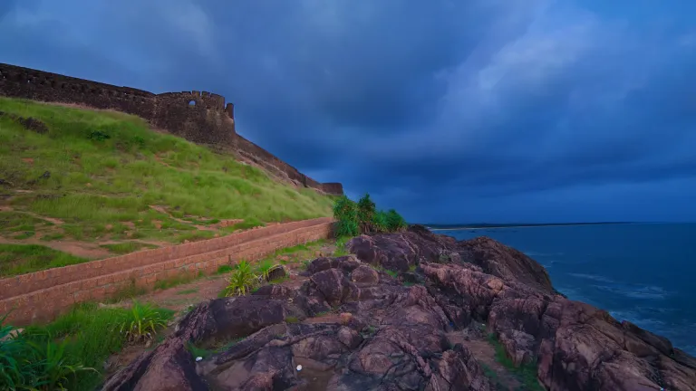
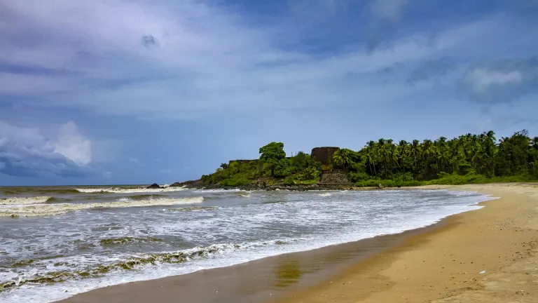
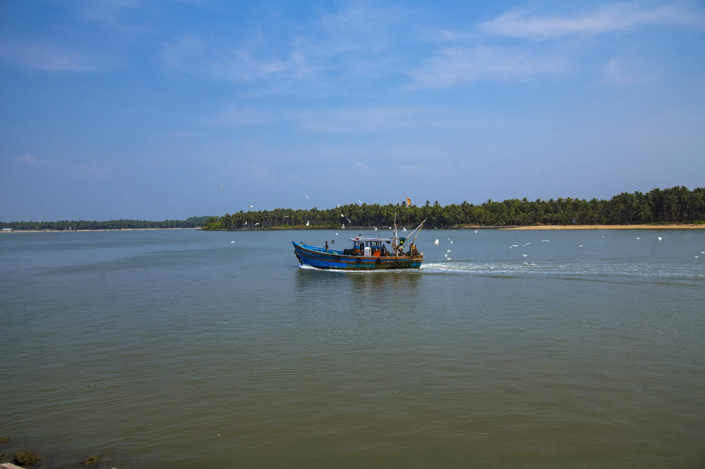

Coastal History
Bekal Fort
Explore the 17th-century laterite fort, observation points and sea-facing ramparts. Check current opening hours and entry rules before setting out.

A vast sea-facing fort, quiet beach time, northern backwaters and a calm finale to a long Kerala journey.
Bekal is best known for its laterite fort overlooking the Arabian Sea, but the wider Kasaragod region adds beaches, rivers, backwaters and a multilingual North Kerala character. Its unhurried setting makes it a strong final stop after an active itinerary.

Explore the 17th-century laterite fort, observation points and sea-facing ramparts. Check current opening hours and entry rules before setting out.
Leave time for an easy shoreline walk and sunset views after the fort, while following flags, lifeguard guidance and seasonal sea conditions.

Combine Bekal with a quieter island-and-estuary experience farther south, using a locally verified boat operator and daylight travel planning.
Bekal Fort developed into a major 17th-century coastal stronghold under the Keladi Nayaka rulers. Control later passed through Mysore and the British East India Company, leaving a strategic structure designed for observation and defence rather than a royal residence.
Official Bekal Fort guideBekal is the final named stop in the 10-day Kerala Deep Dive after Wayanad and Valiyaparamba. Keep the last afternoon flexible for the fort, beach and a comfortable onward rail or airport connection.